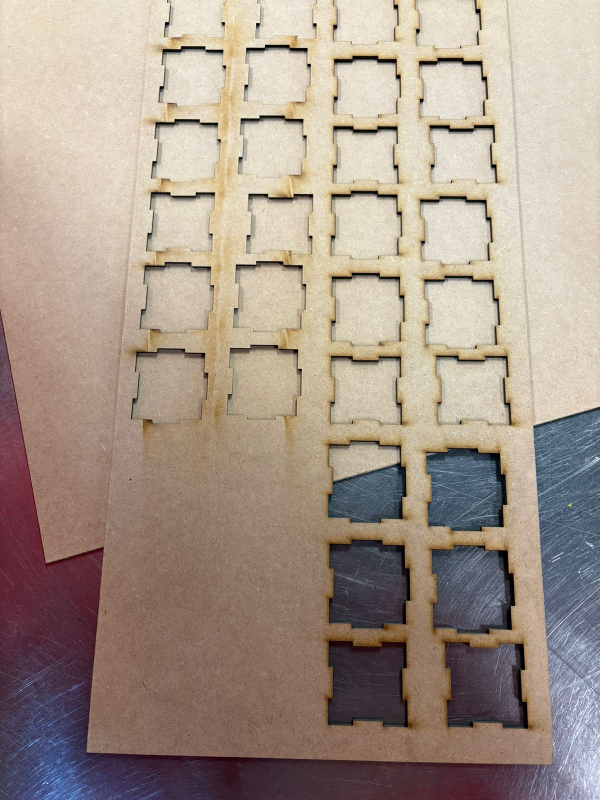
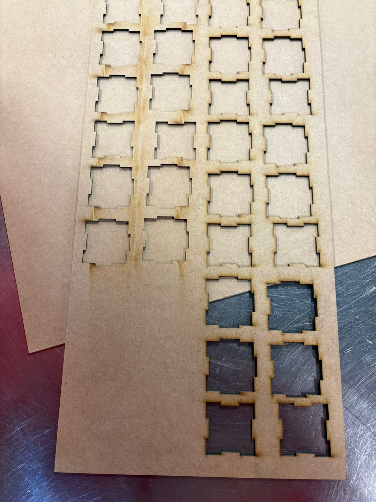

--Introducción--
Para el segundo proyecto se tuvo que cortar con laser un cubo (5x5x5) de material MDF (3 mm). Los cubos se hacen con dos tipos diferentes de caras, 2 tapas (para la parte de arriba y la de abajo) y 4 lados (para los lados).
La intención era que los alumnos entendieran como usar la cortadora láser, entender sobre materiales y comprar el equipo necesario para poder usar el laboratorio de mecánica.
Todo lo que se compró para este proyecto fue:
- Overol
- Botas de Ingeniero (Piel, con casquillo)
- Guantes de Protección
- Lentes de Protección
- Madera MDF (para hacer los cubos)

--Diseño--
Antes de cortar el cubo, se tuvo que diseñar dicho cubo en línea, para eso se volvió a usar Tinkercard. El diseño que se llevo a cabo fue el siguiente:
- Se colocan dos cuadrados iguales.
- Al primer cuadrado (tapa) se le harán huecos de 3mm en cada uno de los lados.
- Al segundo cuadrado (lado) se le hará un hueco de 3mm en solo uno de los lados,mientras que en los otros tres lados se le añadiran pestañas de 3mm.
- Por último simplemente se duplicará la tapa mientras que se cuatriplicará el lado.
--Problema--
El diseño original se hizo en clase (paso a paso) con ayuda del profesor Huber Giron. Lamentablemente este disñeo no funciono pues no tenía en cuenta los 3 mm del material, lo que ocasionó que al cortar el cubo, este no ensamblara correctamente.Para solucionar este problema se tuvo que cambiar un poco las dimensiones de cada cara. Las tapas terminaron teniendo una medida de 53x53, mientras que los lados terminaron teniendo una medida de 53x56.
El diseño final de las tapas es:

El diseño final de los lados es:

El diseño final del cubo es:
--Impresión--
El proceso de impresión fue complicado, a pesar de que el simple corte es extremadamente rápido (4 minutos máximo). Al llegar al laboratorio de mecánica se nos informaron que debíamos descargar el archivo del diseño en un USB vacío. Sin embargo, antes de este paso hubo que convertir el archivo a tipo .dxf (cosa que fue muy difícil pues por alguna razón solamente en la máquina del laboratorio pudimos cambiar el tipo de archivo, en nuestras laptops personales no pudimos hacerlo).
Tras guardar el archivo en la USB, simplemente tuvimos que concetarlo a la máquina, colocar la madera en la cortadora y pedirle al encargado del laboratorio que nos ayudara a cortar el cubo.


 

Tras todo el proceso de cortado, el resultado final fue:

--Comentarios Finales--
A pesar de la dificultad de la tarea, me gusto haber hecho este proyecto. Hubo una sensación de satisfacción, pues nosotros mismos tuvimos que encontrar la forma de poder hacer que el cubo se imprimiera cocrectamente, además de que al mismo tiempo pasamos un agradable rato haciendolo. Adicionalmente me gusto mucho que el proyecto se tuviera que llevar a cabo en el laboratorio de mecánica, pues el olor a grasa y a sudor típico de laboratorios así me encanta.Finalmente todo salió bien y cada que veo el cubo simplemente me acuerdo de esta estresante pero satisfactoria anecdota/historia. 🧠🧊🆚